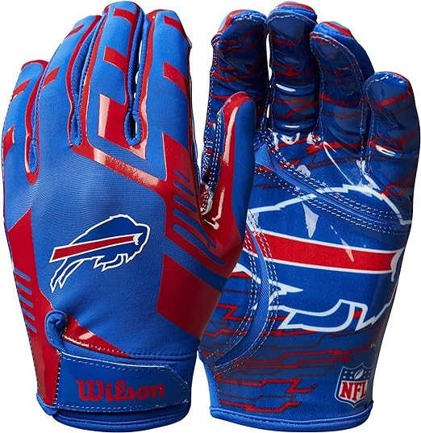

História do Futebol Americano
O futebol americano é um esporte originário dos Estados Unidos, com raízes no futebol associativo e rugby. A primeira partida de futebol americano conhecida foi jogada em 1869 entre as equipes de Princeton e Rutgers. O esporte evoluiu ao longo dos anos, ganhando popularidade em faculdades e universidades.
O futebol americano se caracteriza por sua combinação de força, estratégia e velocidade. Atualmente, a National Football League (NFL) é a principal liga profissional de futebol americano nos Estados Unidos, com milhões de fãs em todo o mundo.
Principais Regras do Futebol Americano
- O jogo é dividido em quatro quartos, cada um com 15 minutos de duração.
- O objetivo é avançar no campo e marcar touchdowns ao cruzar a linha de gol do adversário ou chutar field goals entre os postes.
- Cada equipe tem quatro tentativas (descidas) para avançar pelo menos 10 jardas. Se bem-sucedida, ganha mais quatro tentativas.
- A equipe atacante tem um quarterback que passa a bola, e a equipe defensiva tenta impedir avanços e forçar turnovers.
- Existem posições específicas, como wide receivers, running backs e linemen, com funções distintas no campo.
- Um touchdown vale seis pontos, e um field goal vale três pontos.
- As equipes têm a opção de tentar uma conversão de dois pontos após um touchdown ou chutar um ponto extra.
- Os jogadores usam equipamentos de proteção, incluindo capacetes, ombreiras e protetores bucais.
Produtos
-
Preço: R$107,00
Descrição: Réplica da Bola Ofical de Jogo "TAILGATE" Pesos e medidas oficiais Costurada a máquina Material de alto desempenho com uma suave sensação
-

Preço: R$151
Descrição: As luvas de futebol Wilson NFL Stretch Fit são projetadas para adultos, especificamente para os Buffalo Bills. Elas têm tamanho único e são feitas de materiais elásticos que proporcionam um ajuste confortável. A palma segmentada de silicone oferece aderência e se adapta a diversos tamanhos de mão devido à sua elasticidade máxima.
-
Preço: R$139,90
Descrição: A camisa Buffalo Bills Dry Retrô Rinno é uma escolha nostálgica e autêntica para os fãs de futebol americano masculino. Com um design retrô, confortável tecido Dry e um toque de estilo, esta camisa é perfeita para mostrar apoio ao Buffalo Bills com autenticidade e conforto. Ideal para colecionadores e entusiastas do esporte.